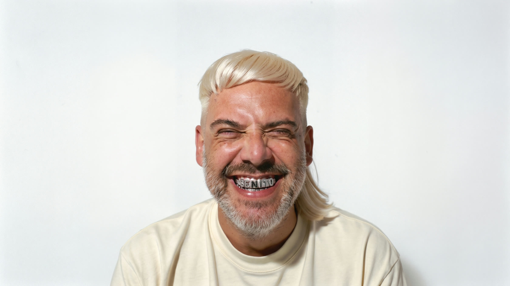
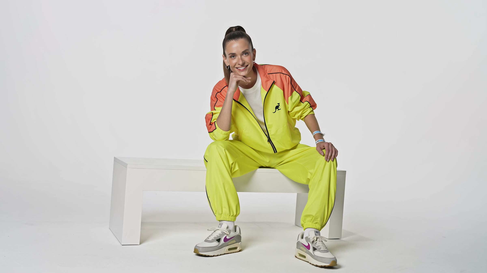
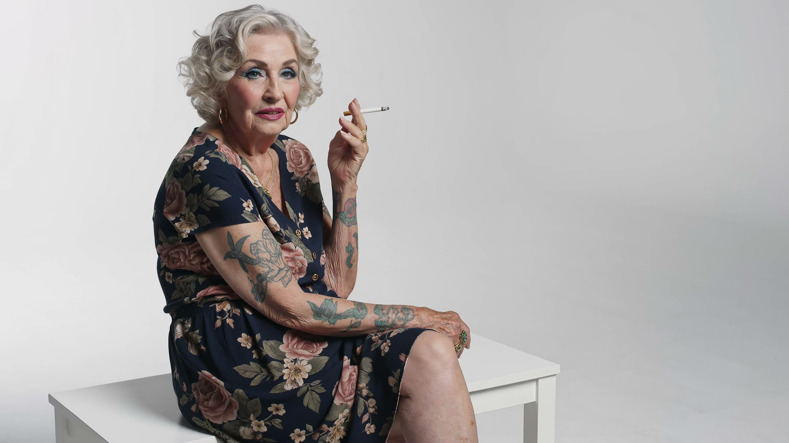
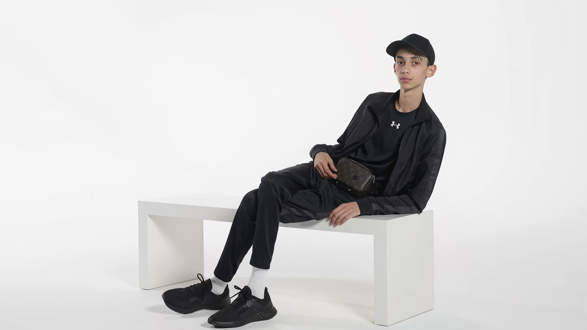
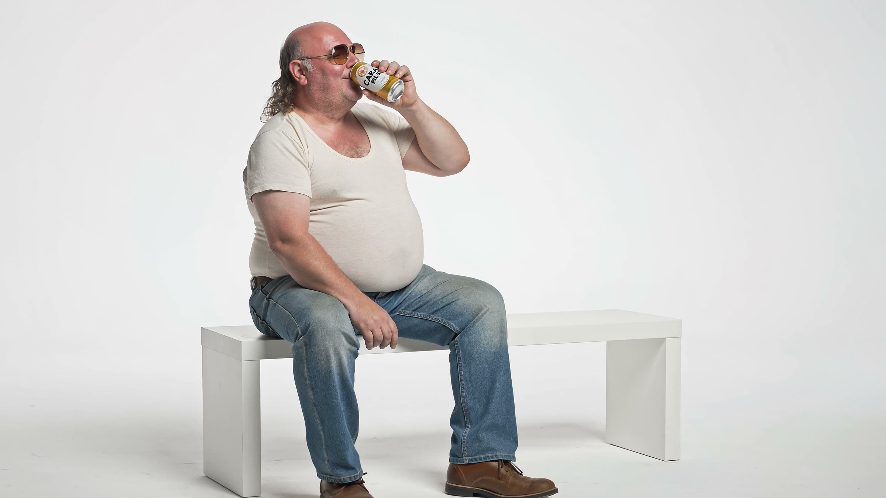
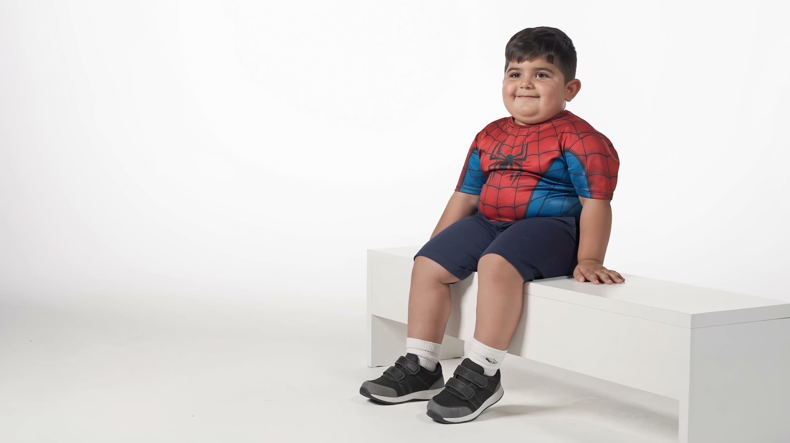

AI Consultancy · oktober 2026
FLUX 3 Image: we testten het met onze eigen briefing
Een benchmark geeft context. Een eigen briefing toont wat een model echt kan.
Dit is Benito. Grillz, een platinablonde mullet en een lach die weinig uitleg nodig heeft. Hij bestaat niet. We maakten hem met FLUX 3 en brachten hem tot leven met Seedance 2.5.
We proberen regelmatig nieuwe modellen uit. Om te zien wat we ermee kunnen maken, waar ze goed in zijn en hoeveel werk er nog nodig is voor een beeld bruikbaar is.
Wat is FLUX 3?
FLUX 3 komt van Black Forest Labs, het team uit Freiburg achter de eerdere FLUX-modellen. Het is getraind op beeld, video en audio. Die gedeelde basis wordt gebruikt voor verschillende toepassingen, waaronder FLUX 3 Image en FLUX 3 Video.
De beeldversie is sinds 1 oktober beschikbaar. Je kunt beelden genereren tot native 4K, tot tien referentiebeelden meegeven en met bounding boxes aangeven waar elementen moeten komen. Interessant als je een compositie wilt uitwerken of gericht iets wilt aanpassen.
Sinds 15 oktober is er ook Klein: een kleinere versie met open weights die je lokaal kunt draaien.
Wat zeggen de benchmarks?
FLUX 3 Image staat op 19 oktober op plaats 12 bij Artificial Analysis voor beeldgeneratie. Black Forest Labs publiceert daarnaast eigen tests waarin Klein goed scoort tegenover andere open modellen.
Dat geeft wat context. Voor ons begint het pas echt bij een eigen briefing. Hoe volgt het model je aanwijzingen? Blijft een personage herkenbaar? Kun je verder bouwen op een beeld zonder telkens opnieuw te beginnen?
En wat vonden wij?
Voor deze reeks werkten we in Krea. We maakten zes personages, gefotografeerd in dezelfde witte studio: Benito, Anita, Debby, Kijano, Danny en Django.
Vooral de materialen vielen op. Huid met textuur, overtuigend chroom en acryl dat het licht mooi opvangt. Ook korte woorden en grote typografie kwamen in onze tests goed uit de beelden.
Kleine tekst en tekst in reflecties blijven aandacht vragen. Je moet blijven selecteren en bijsturen. Een sterk resultaat betekent nog niet dat de volgende generatie even goed zal zijn.
Welk model moet je dan kiezen?
Dat hangt af van wat je wilt maken. Een portret, een verpakking en een campagnebeeld stellen andere eisen. Daarom testen we modellen met concrete briefings en eigen referenties.
Zo ontdek je vrij snel welk model bij je beeldtaal past en waar je tijd verliest aan correcties.
Wil je dat voor jouw merk uitzoeken? Bij Glossy kijken we graag mee. Een eerste intake is gratis.





